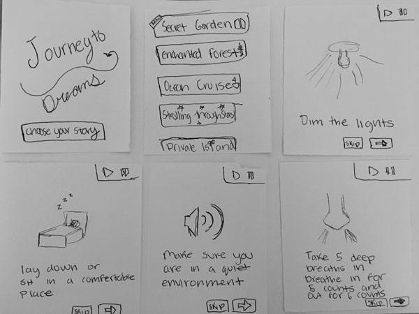

The paper prototyping was a fun way to further explore the way that my website is going to be set up. Through this exercise I received a lot of helpful feedback from other students and realized some things myself. I was on the fence about including a voice over in the website but my fellow students told me that I should definitely include it, because not only will it broaden the audience to younger children but it will also help kids learn how to read. It was also recommended to me to used typed.js for added visual effect. Additionally, I realized that I should include something in the “stories” page that allows new stories to be posted at the top of the page with a little tag on it that says new, so that the app won’t be rendered useless over time.
